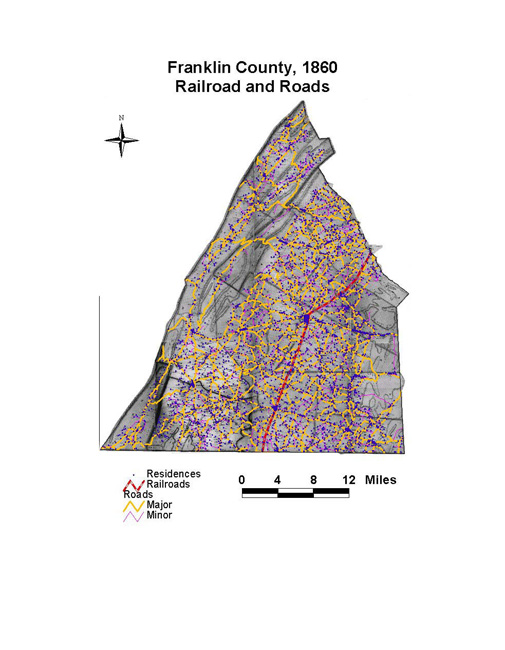

Franklin County: Railroads and Roads, 1860
This map of Franklin County shows the densely built
transportation infrastructure, including railroads, major roads,
and minor roads. Nearly all residences clustered along major and
minor roads. Only a handful of residents lived off of a
road.
Click on the map for a larger image.

The map is based on GIS data and soil type data derived
from a 1978 U.S. Geological Survey soil map. The map is derived
from a D. H. Davison map of Franklin County, published in 1858. The
Davison map has been georeferenced at the Virginia Center for
Digital History, using ESRI Arc Info to produce a Geographic
Information Systems map and database of households.